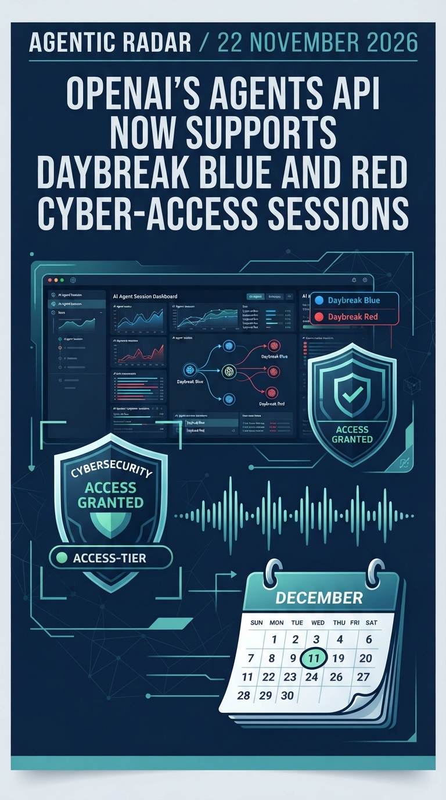

[1031]
OpenAI's Agents API now supports Daybreak Blue and Red sessions as of Nov 21, via an access_programs.cyber field in the official docs guide, pairing gpt-6-sol with daybreak_blue and gpt-5.6-cyber with daybreak_red. [announced-live]
Daily digest

Watch [1035] — need primary URL: fetch Meta Muse safety and permissions documentation — Reuters (Nov 18, via TechCrunch and PYMNTS Nov 19) reports staff saying Muse mixed up conversations and accessed Signal and bank data; no Meta primary artifact in the item.
Watch [1034] — need primary artifact: fetch the Lean Focused Research Organization and Mathlib announcement and the proof repo — USA Today (Nov 21) reports they independently verified the Lean code; no primary announcement link in the item.
Watch [1037] — need primary URL: fetch Google's Antigravity CLI 1.5.14 release notes from Nov 21 — the auto-mode change letting agents read files outside the workspace without asking rests on a secondary summary.
Watch [1036] — need primary URL: fetch Z.ai's official release notes — Nov 18-19 checks found no GLM-5.5 announcement, model page, API ID or weights; GLM-5.3 remains newest.